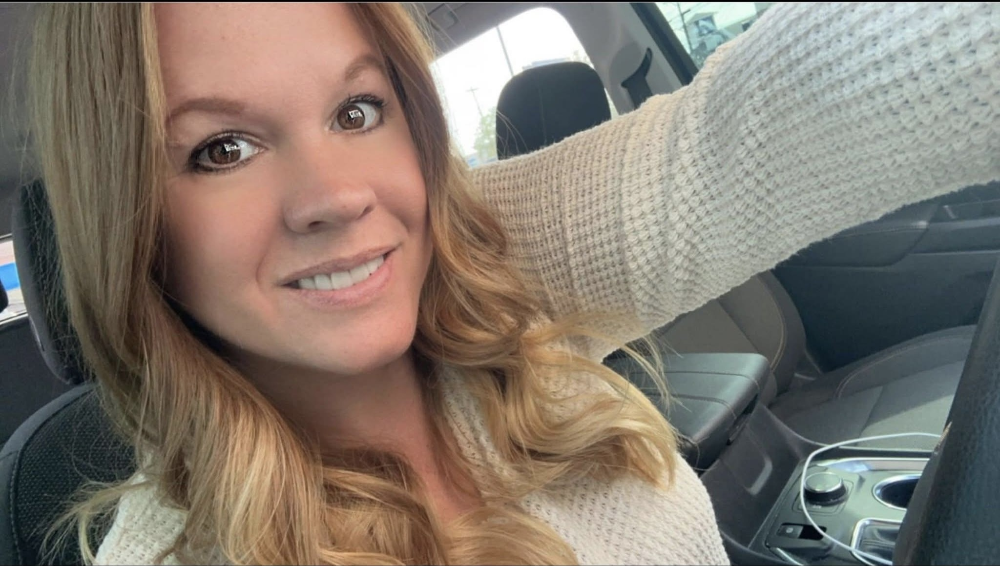
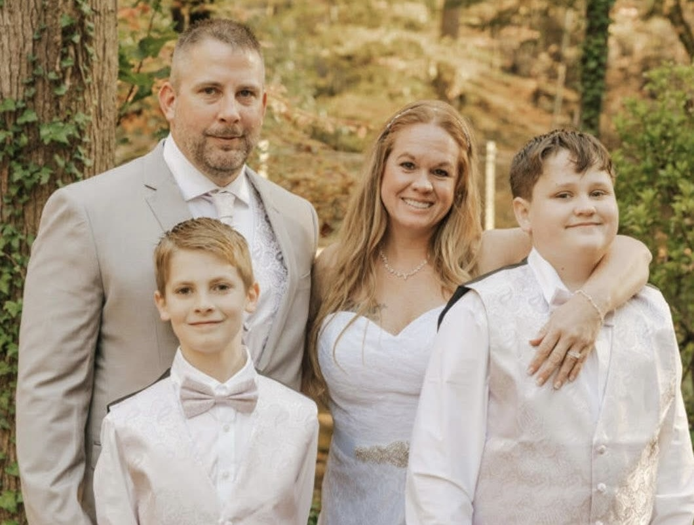

My Momma
There are truly no words for just how great my mom is. Watching her go through life, I've seen her be strong, flourish, and be graceful. Since my earliest memories, she has always been a great example of who I want to be as a person. Even in her toughest moments, I have watched her pick herself back up, dust herself off, and face any problem with no fear. She is a woman with a heart of gold. Anyone would be lucky to have someone as great as my mom in their life.

My Favorite Memories With Her
My mom has been my best friend throughout my whole life. One of my favorite trips we ever went on together was back in 2023 to Bonnaroo. It was our first time attending a camping music festival, and we had the time of our lives. We watched the performances from Three 6 Mafia, Korn, GRiZ, Paramore, Foo Fighters, and so many more. Another memory I adore is taking my brother, Matt, and his friend to a Pierce the Veil concert. I hung out with my mom in Atlanta while they were attending the concert. We drove around the city, looked at bunnies in a pet store, and ate out at Moe's Southwest Grill. Maybe it was just because of how hungry we were at the time, but I still remember how good those nachos were. I'm excited to share many more memories with her.
